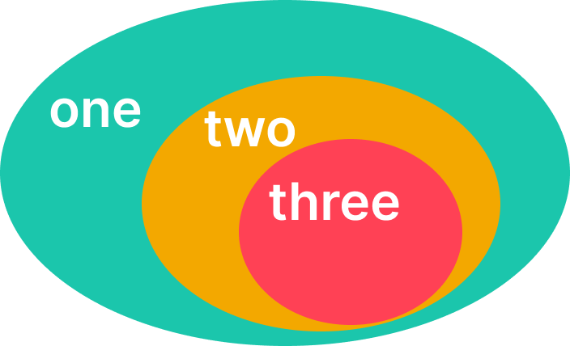

Breadcrumbs are used to show a linked tree system to users.
The above component indicates that one is a set containing two, and two is a set that contains three

Sans-serif font should be used. Breadcrumb buttons should look like links.
The font size should be standard paragraph size.
The breadcrumb container should conform to the size of the elements within.
The container should not have excess padding - as to avoid obstructing the breadcrumbs subject.
one
>
two
>
three
DO: Breadcrumbs conforms to content
one
>
two
DON'T: Breadcrumbs container is not fitted to content
The container has margins of 1rem on each side.
The padding and margins on each crumb is regular paragraph padding.
Breadcrumbs should appear in the top left of the subject - they are marked with high importance.
If not within an image - they should be above the subject.
Breadcrumbs with overflow should have a reduced character limit